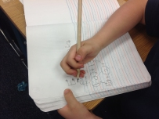

Werkwijze
Alle kinderen zijn verschillend. Ze verschillen bijvoorbeeld in interesses, temperament en manier van reageren op een situatie. Kinderen verschillen ook op het gebied van het leren van elkaar. De één wordt opstandig als iets niet lukt, de ander trekt zich terug en wordt heel stillletjes. De één heeft visuele ondersteuning nodig, bijvoorbeeld in de vorm van een plaatje of geheugensteuntje op zijn tafel. De ander moet de leerstof juist regelmatig door de juf uitgelegd krijgen en heeft vooral bevestiging nodig om weer verder te kunnen werken. De manier waarop een kind het beste leert, wordt ook wel de leerstijl van een kind genoemd.
Het begeleidingstraject
De eerste tijd van de begeleiding van het kind zal meestal gericht zijn op onderzoek en toetsing. Als het beeld helder is, kan er een handelingsplan gemaakt worden, waarbij wij rekening houden met de leerstijl en de sterke kanten van het kind. Door daar in de begeleiding bij aan te sluiten, zal het kind sneller en met meer plezier leren en dit leidt automatisch tot betere resultaten. Onze resultaten moeten meetbaar zijn. Daarom zullen wij, na een periode begeleiding, altijd een toetsmoment en een evaluatie plannen.
Een begeleidingstraject bevat (zie folder) de volgende stappen:
- Aanmelding
- Onderzoek
- Opstellen van een handelingsplan
- Begeleiding
- Toetsing en evaluatie
Aanmelding
Als u uw kind wilt aanmelden, kunt u telefonisch of per mail contact met ons opnemen. Wij plannen vervolgens op korte termijn een intakegesprek met u. Het intakegesprek is kosteloos en vrijblijvend.